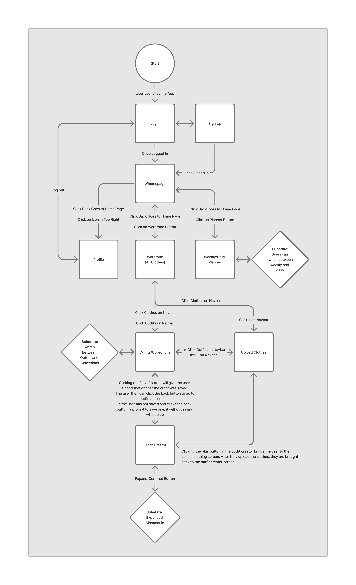
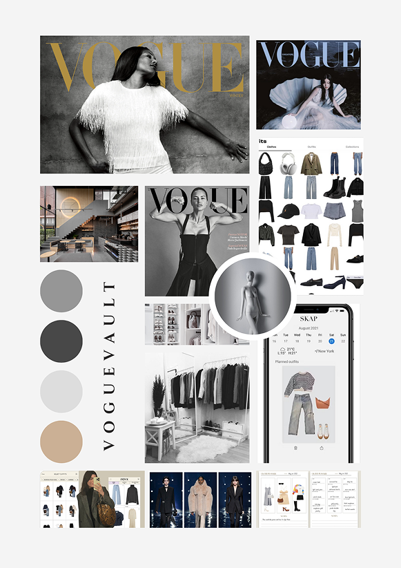
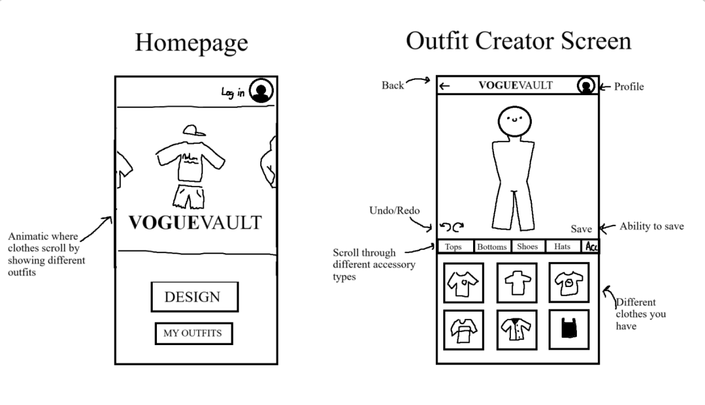
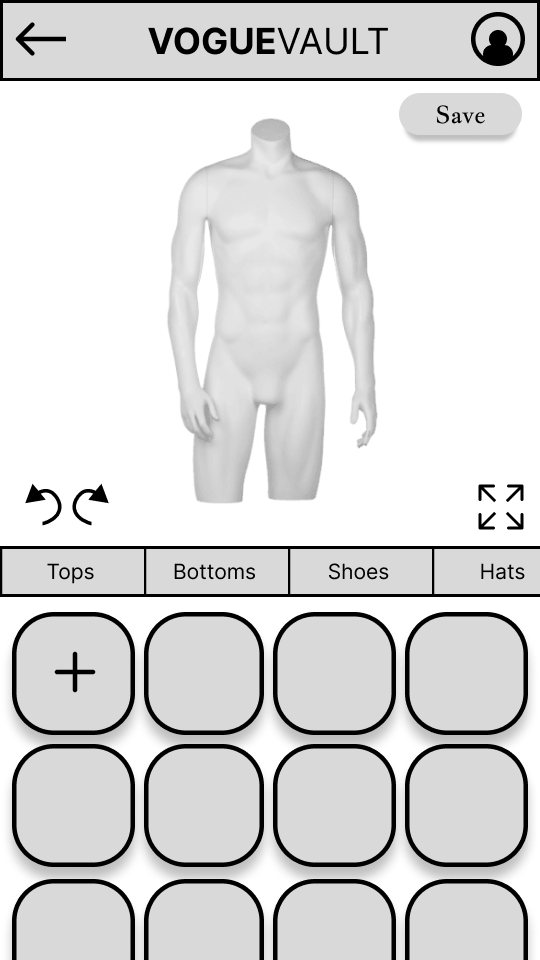
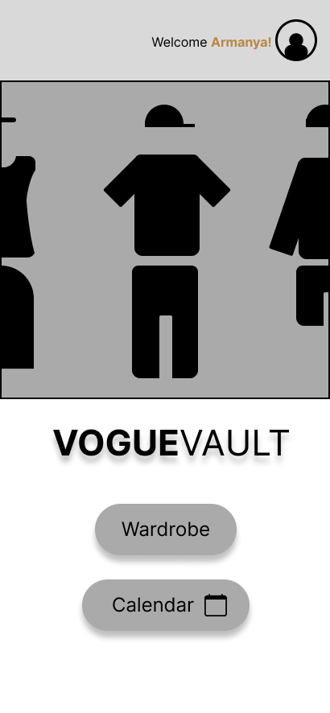
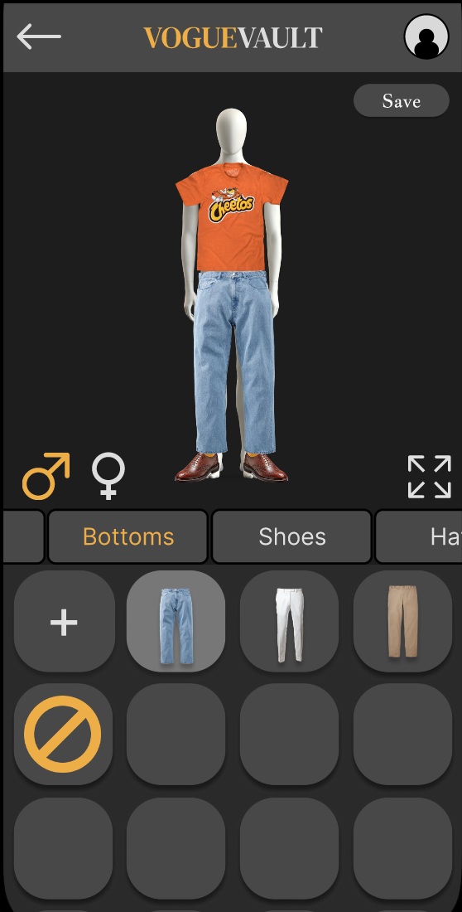
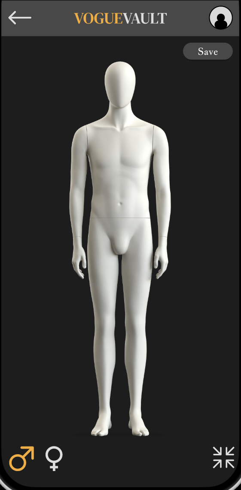
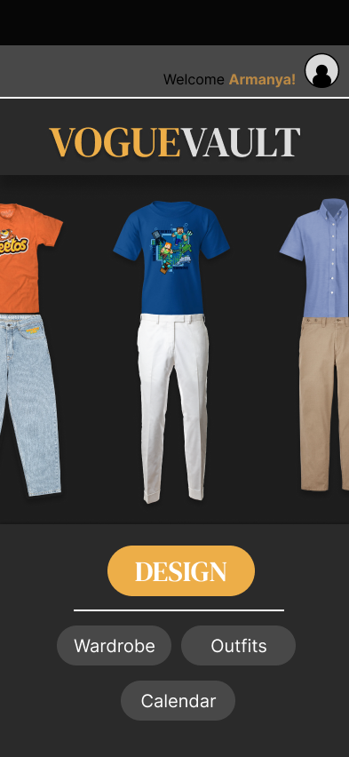

Vogue Vault was a semester-long UI/UX design project developed during my second-year at the Rochester Institute of Technology from March 2025 - May 2025. I worked as a Lead Designer in a team of 5 people, and I developed skills pertaining to UI/UX design, rapid iteration in Figma, and AGILE development with Trello.

For this project, we decided we wanted to design and prototype an outfit-planning app. Firstly, we created a structure diagram to plan the flow and interactions with the app. I designed the interactions with the outfit creator and the homepage. After that we developed a moodboard, focusing on discrete and "clean" fashion.


I continued to work with the homepage and outfit creator screens and designed wireframes for both pages. For these sections, I wanted to ensure that user-created outfits were front and center. When first opening the app, users would be greeted by an animatic showing different random outfits. This communicates to the user the intention of the app and the focus on rapid outfit-planning. The outfit-creation screen was more difficult to design, as both the mannequin and the clothing selection area needed to display clothes with enough clarity to view on a smart phone.

Futher developing the outfit creator screen, I moved the save button to the top right corner and added an "expand" button to view the outfits in closer detail. Moving the save button away and above other elements signifys its importance and visually reminds the user to save often. This iteration of this screen also included undo and redo buttons, to allow users to revert mistakes. Additionally, an "add" button was added as the first button in the clothing selector contianer. This allows users to add new articles of clothing directly from the creator screen, without having to back out and move to another page

The second homepage wireframe changed less significantly overall. Firstly, the app's title moved outside of the animatic zone, drawing more attention to the animatic and allowing the clothes to appear larger on screen. The main buttons were also switched from "Design" and "My Outfits" to "Wardrobe" and "Calendar". This shift reflected our teams pivot to focus more on the planning portion of the app rather than strict outfit creation.

Two main changes were made to the final design of the outfit creator page. The first change was the replacement of the "undo" and "redo" buttons with mannequin gender buttons. I came to the conclusion that the undo and redo features only minutely benefited the app as user-made alterations wouldn't be drastic enough to warrant frequent reversions. Instead, gender selection buttons were included to allow users to more accurately represent themselves and broaden our audience. If we continued developing this prototype, I would have included more customization buttons to account for a variety of statures and builds. The second change was the addition of a "no clothing" button represented by a circle and a cross. This gave users more customization and control over their outfits. Pressing the "expand" button hides the different clothing options and zooms in on the mannequin to show outfits in greater detail.


The final design of the homepage further improved on previous designs. Firstly, the title of the app was moved above the animatic to draw more attention to it. Secondly, more navigation buttons were added and rearranged. The "Design" button takes the user straight to the outfit creator screen and is visually contrasting to highlight its significance. I decided to re-include the design button as I felt that users needed a quick way to jump to the main focus of the app. While the calendar, wardrobe, and outfit pages are all important, they are all secondary to the primary feature of the app.
